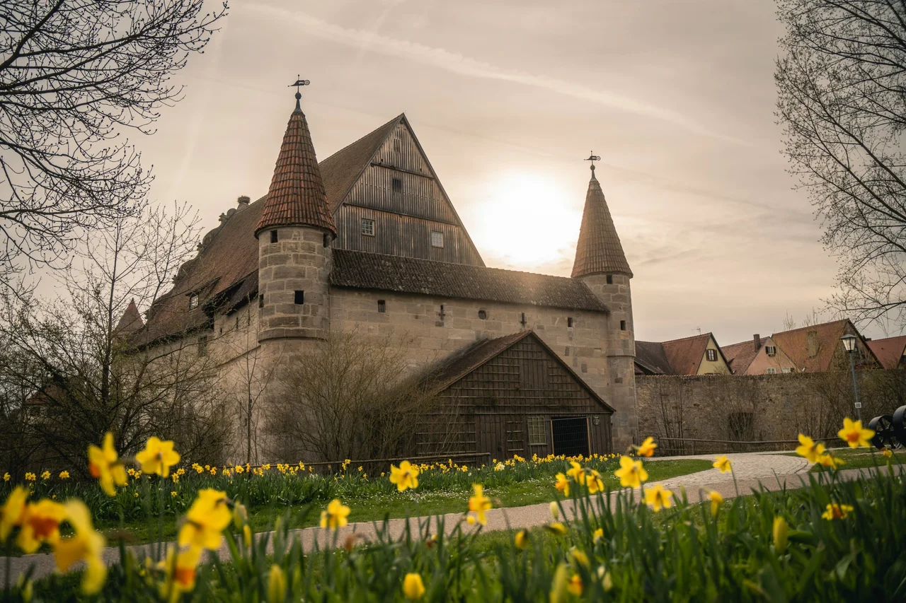

Old town
Lanes, towers & timber framing.
Stroll through the remarkably well-preserved historic town and discover new perspectives between the old rows of houses at every turn.

Dinkelsbühl · Romantic Road
Timber-framed houses, towers, the town wall and winding lanes: from your apartment, Dinkelsbühl begins right outside the door.
Simply start walking
The historic old town is best explored on foot. Cafés, restaurants, squares and sights are close together – ideal for relaxed days without a fixed plan.
Old town
Stroll through the remarkably well-preserved historic town and discover new perspectives between the old rows of houses at every turn.

Romantic Road
Dinkelsbühl is one of the best-known stops along the Romantic Road and makes an excellent base for further trips around the region.

Tradition
The Kinderzeche is one of the town’s defining traditions and brings Dinkelsbühl’s history to life in a special way every year.

As the day winds down
Historic walls, warm light and a quiet moment to round off the day.
Your starting point
With an apartment in the old town, many places are only a short walk away. The host will provide detailed arrival and parking information directly.
Plan your stay↗